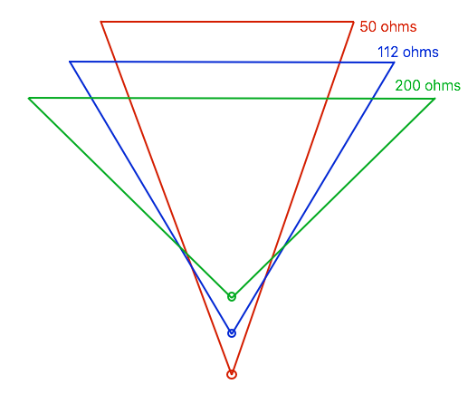

Delta-Loop-Lesetipp: ein Besuch bei PE7K
Wer sich für 80-m-Delta-Loops begeistert, sollte bei der befreundeten Station PE7K auf QRZ vorbeischauen.

Grafik zum Lesetipp PE7K auf QRZ.com. Die angegebenen Impedanzen sind Beispiele für die dargestellten Varianten, keine allgemeingültigen Werte jeder Delta-Loop.
Eine weitere Perspektive auf die 80-m-Loop
Meine Hari 80m Delta Loop ist ein guter Anlass, auch andere Aufbauten kennenzulernen. Ein persönlicher Lesetipp ist die befreundete Station PE7K auf QRZ.com ↗: Wer sich besonders für Delta-Loops auf 80 m interessiert, findet dort spannende Anregungen.
Schau beim Lesen bewusst auf Aufbauhöhe, Form, Einspeisung und die Umgebung. Eine Loop ist nicht allein durch ihre Drahtlänge beschrieben. Ein anderer Garten, eine andere Leitung oder ein anderer Speisepunkt können zu deutlich anderen Messwerten führen.
Ideen mit der eigenen Messung verbinden
Notiere eine konkrete Frage, die du am eigenen Aufbau untersuchen möchtest. Vergleiche anschliessend unter möglichst gleichen Bedingungen, statt mehrere Dinge gleichzeitig zu ändern. Mein RigExpert-/AntScope2-Beitrag ↗ zeigt dazu die Messkurve meiner Antenne und erklärt, was sich aus dem SWR ablesen lässt.
Die Stationsbeschreibung und Bilder von PE7K bleiben auf der Originalseite. So liest du die Informationen direkt beim Betreiber; einzelne QRZ-Inhalte können eine Anmeldung erfordern.